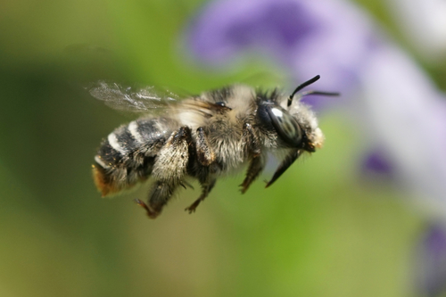
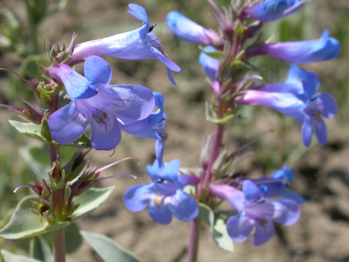

A Digger Bee
Anthophora terminalis native bee

Fast-flying solitary digger bee; long tongue suits penstemons and mints.
28 documented plant relationships.
sips nectar at
 Alberta PenstemonPenstemon albertinus
Alberta PenstemonPenstemon albertinus Douglas Goldman, some rights reserved (CC BY-SA), uploaded by Douglas Goldman") FireweedChamaenerion angustifolium
FireweedChamaenerion angustifolium Alan Prather, some rights reserved (CC BY), uploaded by Alan Prather") Giant HyssopAgastache foeniculum
Giant HyssopAgastache foeniculum Matt Lavin, some rights reserved (CC BY-SA)") Hairy Golden AsterHeterotheca villosa
Hairy Golden AsterHeterotheca villosa Sarah Johnson, some rights reserved (CC BY), uploaded by Sarah Johnson") MeadowsweetSpiraea alba
MeadowsweetSpiraea alba Jason Sturner, some rights reserved (CC BY)") Nodding OnionAllium cernuum
Nodding OnionAllium cernuum Caleb Catto, some rights reserved (CC BY), uploaded by Caleb Catto") Pale AgoserisAgoseris glaucaPurple Prairie CloverDalea purpurea
Pale AgoserisAgoseris glaucaPurple Prairie CloverDalea purpurea Douglas Goldman, some rights reserved (CC BY-SA), uploaded by Douglas Goldman") Self-healPrunella vulgaris
Self-healPrunella vulgaris Fluff Berger, some rights reserved (CC BY-SA), uploaded by Fluff Berger") Showy FleabaneErigeron speciosus
Showy FleabaneErigeron speciosus David Anderson, some rights reserved (CC BY), uploaded by David Anderson") Silky LupineLupinus sericeus
Silky LupineLupinus sericeus Tim Messick, some rights reserved (CC BY), uploaded by Tim Messick") Silvery LupineLupinus argenteus
Silvery LupineLupinus argenteus Slender Cinquefoil (Graceful Cinquefoil)Potentilla gracilis
Slender Cinquefoil (Graceful Cinquefoil)Potentilla gracilis
Smooth Blue BeardtonguePenstemon nitidus gwt2102, some rights reserved (CC BY)") Spreading DogbaneApocynum androsaemifolium
Spreading DogbaneApocynum androsaemifolium Square-stem MonkeyflowerMimulus ringens
Square-stem MonkeyflowerMimulus ringens tzeducation, some rights reserved (CC BY), uploaded by tzeducation") Wild BergamotMonarda fistulosa
Wild BergamotMonarda fistulosa Ole Husby, some rights reserved (CC BY-SA)") Wild RaspberryRubus idaeus
Wild RaspberryRubus idaeus Andrea Romero, some rights reserved (CC BY), uploaded by Andrea Romero") Wild VetchVicia americana
Wild VetchVicia americana Don Loarie, some rights reserved (CC BY), uploaded by Don Loarie") Woods' RoseRosa woodsii
Woods' RoseRosa woodsii Matt Berger, some rights reserved (CC BY), uploaded by Matt Berger") Yellow Monkey FlowerErythranthe guttata
Yellow Monkey FlowerErythranthe guttata Justin Meissen, some rights reserved (CC BY-SA)")
 Tom Norton, some rights reserved (CC BY), uploaded by Tom Norton")